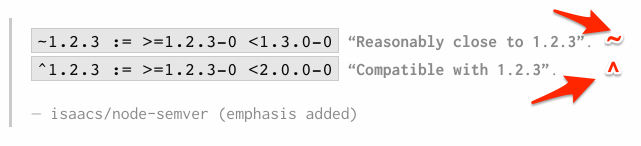
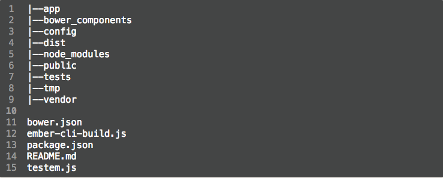
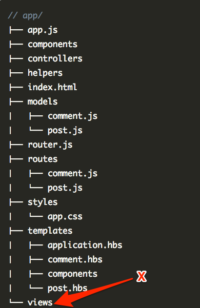
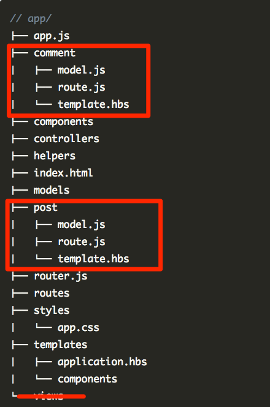

Javascript for the web
Day 2
About the Speaker
- Marcellin Nshimiyimana
- Software Engineer @ Fusemachines
prerequisite
- Some Javascript
- Some JQuery
- ES6
content
- Node js and npm
- Bower
- Ember cli
- Ember basic - part 1
Node js and npm
- Node js allow us to run ember cli commands
- npm is the node package manager.
package version
Bower
Web assets package manager
Ember cli
Utility package for testing and deploying ember applications
Ember basic - part 1
- Coding by convention
- app structure
- Routes
- Data ownership / DDAU
Coding by convention
Why we use Ember at Fusemachines
wiki Convention over configuration (also known as coding by convention) is a software design paradigm used by software frameworks that attempt to decrease the number of decisions that a developer using the framework is required to make without necessarily losing flexibility.
app structure
app structure
Why use pods
programwitherik: Ember pods are a way of structuring your project by feature, instead of type.
Why use pods
Routes and their handlers

Data ownership / DDAU
Who should modify the data
- Route: fetches the data
- Controller: manipulate the data
- Component: present the data
- Good article by Lauren Tan
Data ownership / DDAU

Resource
Questions ?
Exercises
- Individual: Turn your project done in Day 1, into an Ember app.